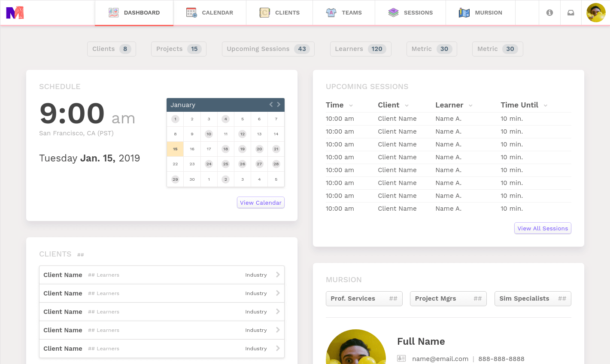
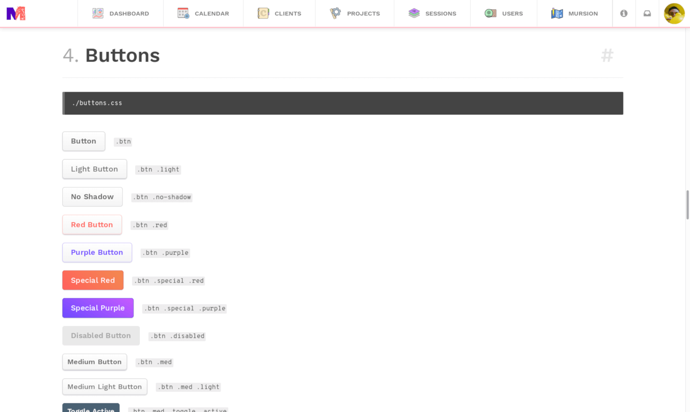
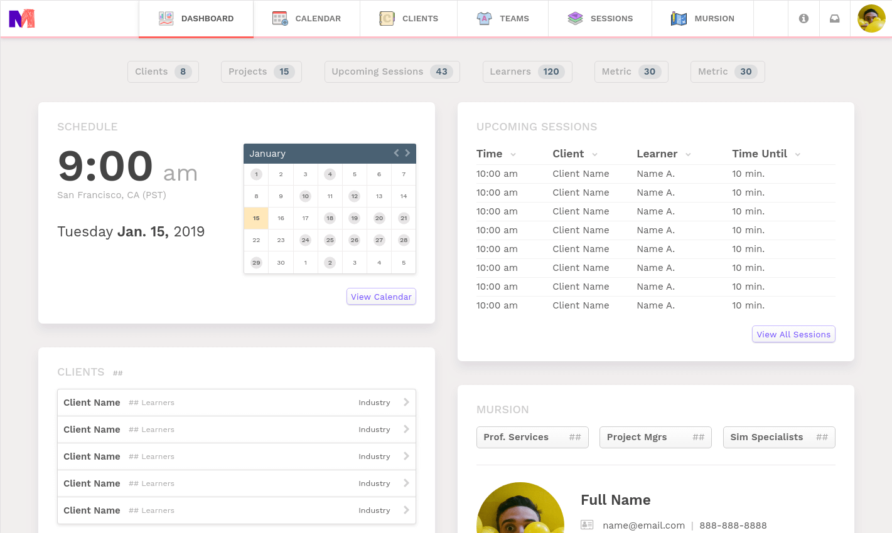
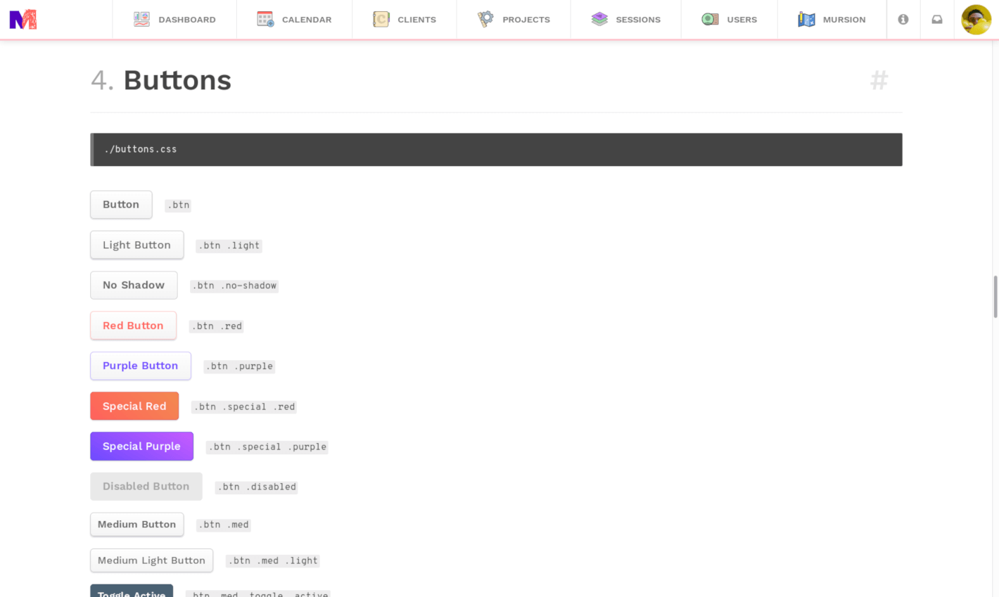
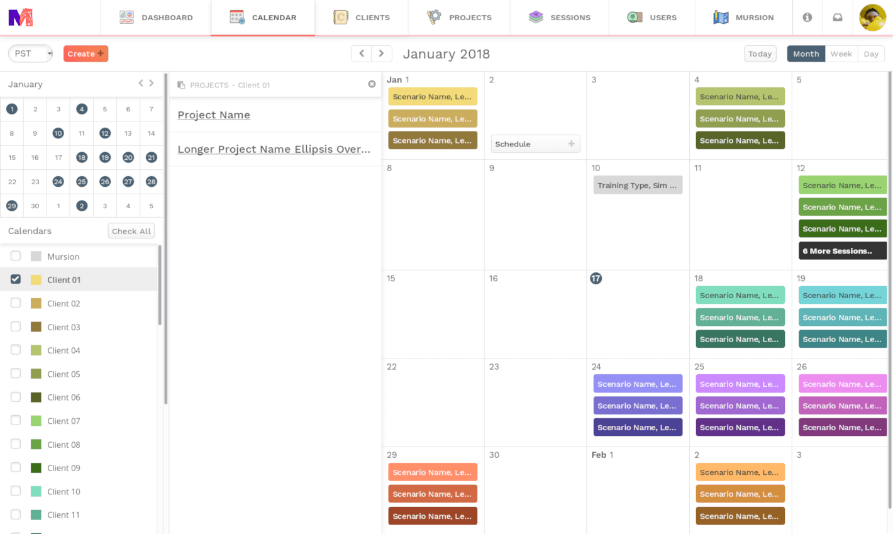
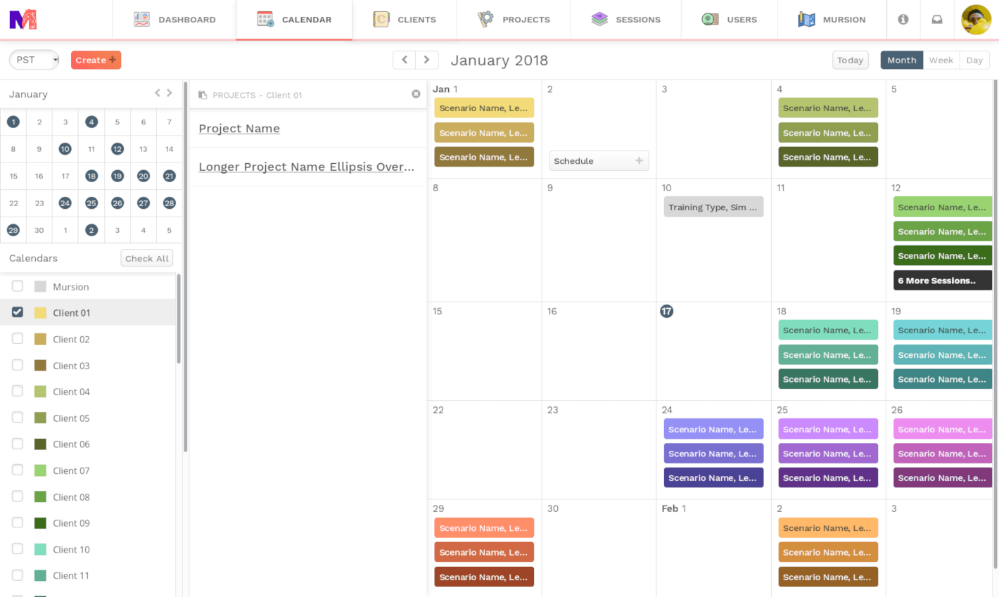
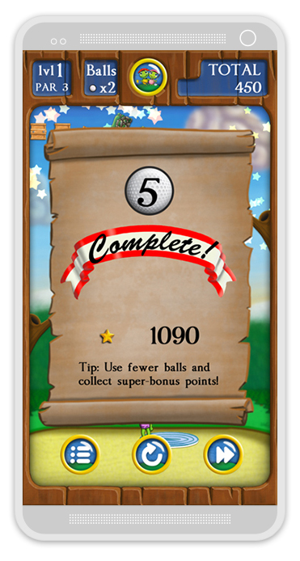
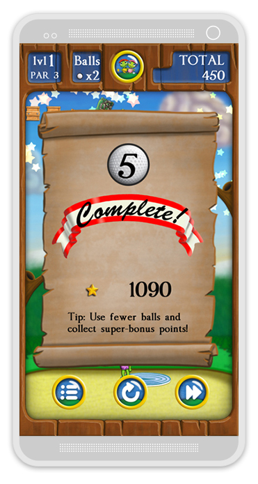

Mursion Portal Styleguide
¶ 



 

With 6 unique user-types, the Mursion Portal supports all user management, session scheduling, project development, and notifications required for training delivery across all clients.
I designed all of the main html elements, ui components, and sub pages with a focus on functional accessibility & informational hiearchy; with a unique but familiar styling.
Doughnut Layers
¶Vector doughnut study done in Inkscape. Inspiration from contemporary, non-traditional tattoo & sticker art.
Bunker Blast
¶
 

A contract project for The Littlest Golfer, Bunker Blast incorporates the original characters Sandy, Putter, Steve, and Stinky into a 2D brick-breaker/Peggle style Unity game. The game tours references to world-famous courses in its four chapters, and has plenty of content with 40 total levels.
I created almost all of the art assets, sprite sheets, and character animation, took care of some level design, and developed the promo materials and logo.
Honestly, for a kids game it's quite challenging, and the final level is pretty ridiculous.
Turtle Links
¶A 3D animated pilot on which I worked for The Littlest Golfer, Inc. From storyboarding to character animation to compositing — I, in a team of 3, worked to bring Putter, Sandy, Steve, Stinky, and Mulligan to life in a fun and educational golf-centered story.

In creating the logo, I made sure to incorporate the flag & hole as well as a flying ball as images while keeping the typography large, blocky, and fun — perfect for the 4-10 age demographic. It's simple, but I love the vintage yet not dated feel to the entire concept.

Working off of the established illustrations for Sandy and Putter, and developing the look for a new character - Steve the Weasel, I sculpted and painted in Zbrush, retopo'd, and imported, rigged, and shaded in Modo for animation. I also modeled a few props for the show as well as toy designs including a few stylized golf carts, course shop, and more.
Graphite Concept Sketches
¶From tattoo ideas to game concepts, I always enjoy getting ideas out on paper in my sketchbook first.

Crywolf Text Animation
¶A fun project for a music video of a good friend of mine - Justin Phillips. Lyric video style done in After Effects.
Don't Dread On Me
¶Visual development for a game a friend and I were dreaming up one afternoon. "A runaway dread tries to escape the perils of a degenerate dead-head's flat, along the way discovering untapped potential as he embraces the fetid squalor from which he grew."
...Or you know, a grungy 2D infinite runner.

Adwords Display Ads
¶Whew, look at that compression nightmare of a collage.. I've made hundreds of ads for many diverse ad campaigns for the GDN, Zillow, & Facebook.
Headlines and CTA's are chosen from text ad PPC performance in Adwords, and coupled with unique branding styles from each individual client.
Ad campaigns are regularly tested and reviewed - from layout, messaging, sizing, and imagery, down to the smallest detail to increase and refine engagement.
Live 360
¶Logo development for a new Broker Agency out of Charleston, South Carolina.
Logo Exercises
¶Red Bike was a bike-delivery deli I worked at back in college. Although just an exercise project, I'm happy with the maturity of the branding and it's certainly a few steps up from the original, bitmapped Power-Point logo.
Valentine's Minion Sketch
¶Trying out some photoshop brushes and techniques with a simple black and grey style.